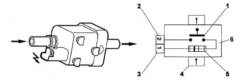
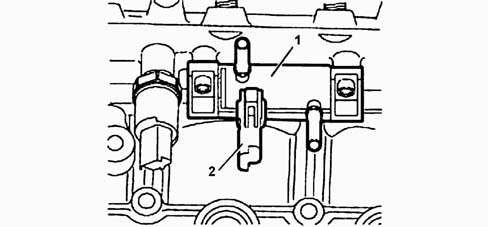

1044D FUEL HEATING DEVICE
- Path
- Descriptions > 10 ENGINE > 1044 FUEL CIRCUIT PUMP/S AND DEVICES > 1044D FUEL HEATING DEVICE
- Kind
- system description
- Applies to
- engines: 2.0 16V JTD, 2.2 16V JTD; all production periods
- Interactive page
- https://sloeber94.github.io/elrnDB-fUlss/en/#/179006598
Applies to: engines: 2.0 16V JTD, 2.2 16V JTD; all production periods
DESCRIPTION
There is a fuel pre-heating device on the low pressure circuit between the low pressure electric pump and the filter.
This device is managed by the NCM, according to the signal from the fuel temperature sensor located on the return manifold to the tank.
The fuel heater has the function of getting the fuel to reach its operating temperature.
It consists of a heating resistance and a thermo-expandable element. The adjustment of the temperature is ensured by the thermo-expandable element.
When the thermo-expandable element closes the contact, the heating resistance receives a 150 W supply.
The heater is activated when the temperature of the fuel is below - 2°C (+ / - 2) and is deactivated when the temperature of the fuel is above + 3°C (+ / - 2).
Diagram showing fuel heating device

1, Thermo-expandable element | 4, Fuel inlet |
2, Earth | 5, Heating resistance |
3, Dual contact positive | 6, Fuel |
DIESEL TEMPERATURE SENSOR
The fuel temperature sensor measures the temperature of the fuel and is fitted on the tank return circuit manifold.
The sensor is the NTC type (Negative Temperature Coefficient); the more the temperature increases, the more the resistance value decreases.

1, Fuel return circuit manifold | 2, Fuel temperature sensor |